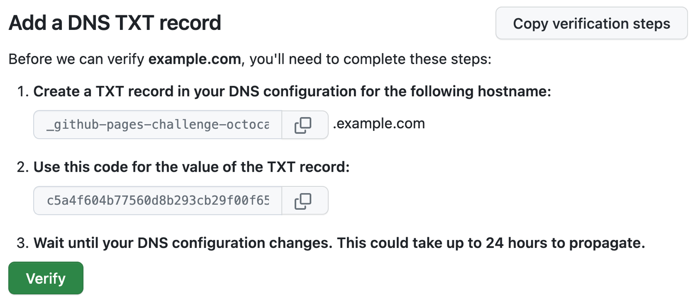
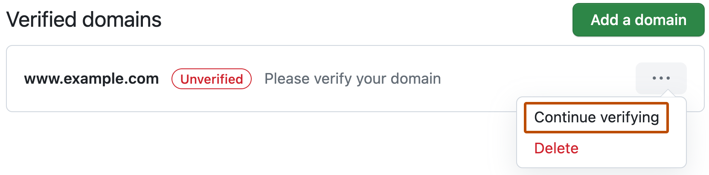
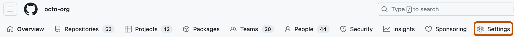

You can increase the security of your custom domain and avoid takeover attacks by verifying your domain.
When you verify a custom domain for your personal account, only repositories owned by your personal account may be used to publish a GitHub Pages site to the verified custom domain or the domain's immediate subdomains. Similarly, when you verify a custom domain for your organization, only repositories owned by that organization may be used to publish a GitHub Pages site to the verified custom domain or the domain's immediate subdomains.
Verifying your domain stops other GitHub users from taking over your custom domain and using it to publish their own GitHub Pages site. Domain takeovers can happen when you delete your repository, when your billing plan is downgraded, or after any other change which unlinks the custom domain or disables GitHub Pages while the domain remains configured for GitHub Pages and is not verified.
When you verify a domain, any immediate subdomains are also included in the verification. For example, if the github.com custom domain is verified, docs.github.com, support.github.com, and any other immediate subdomains will also be protected from takeovers.
Warning
We strongly recommend that you do not use wildcard DNS records, such as *.example.com. These records put you at an immediate risk of domain takeovers, even if you verify the domain. For example, if you verify example.com this prevents someone from using a.example.com but they could still take over b.a.example.com (which is covered by the wildcard DNS record).
It's also possible to verify a domain for your organization, which displays a "Verified" badge on the organization profile. For more information, see Verifying or approving a domain for your organization.
You may be verifying a domain you own, which is currently in use by another user or organization, to make it available for your GitHub Pages website. In this case, the domain will be immediately released from GitHub Pages websites which are owned by other users or organizations. If you are attempting to verify an already verified domain (verified by another user or organization), the release process will not be successful.
Note
If you don’t see the options described below, make sure you’re in your Profile settings, not your repository settings. Domain verification happens at the profile level.
In the upper-right corner of any page on GitHub, click your profile picture, then click Settings.
In the "Code, planning, and automation" section of the sidebar, click Pages.
On the right, click Add a domain.
Under "What domain would you like to add?," enter the domain you wish to verify and select Add domain.
Follow the instructions under "Add a DNS TXT record" to create the TXT record with your domain hosting service.

Wait for your DNS configuration to change, this may be immediate or take up to 24 hours. You can confirm the change to your DNS configuration by running the dig command on the command line. In the command below, replace USERNAME with your username and example.com with the domain you're verifying. If your DNS configuration has updated, you should see your new TXT record in the output.
dig _github-pages-challenge-USERNAME.example.com +nostats +nocomments +nocmd TXT
After confirming that your DNS configuration has updated, you can verify the domain. If the change wasn't immediate, and you have navigated away from the previous page, return to your Pages settings by following the first few steps and, to the right of the domain, click and then click Continue verifying.

To verify your domain, click Verify.
To make sure your custom domain remains verified, keep the TXT record in your domain's DNS configuration.
Organization owners can verify custom domains for their organization.
Note
If you don’t see the options described below, check that you’re in your Organization settings. Domain verification doesn’t take place in repository settings.
In the upper-right corner of GitHub, click your profile picture, then click Organizations.
Select an organization by clicking on it.
Under your organization name, click Settings. If you cannot see the "Settings" tab, select the dropdown menu, then click Settings.

In the "Code, planning, and automation" section of the sidebar, click Pages.
On the right, click Add a domain.
Under "What domain would you like to add?," enter the domain you wish to verify and select Add domain.
Follow the instructions under "Add a DNS TXT record" to create the TXT record with your domain hosting service.
Wait for your DNS configuration to change. This may be immediate or take up to 24 hours. You can confirm the change to your DNS configuration by running the dig command on the command line. In the command below, replace ORGANIZATION with the name of your organization and example.com with the domain you're verifying. If your DNS configuration has updated, you should see your new TXT record in the output.
dig _github-pages-challenge-ORGANIZATION.example.com +nostats +nocomments +nocmd TXT
After confirming that your DNS configuration has updated, you can verify the domain. If the change wasn't immediate, and you have navigated away from the previous page, return to your Pages settings by following the first few steps and, to the right of the domain, click and then click Continue verifying.
To verify your domain, click Verify.
To make sure your custom domain remains verified, keep the TXT record in your domain's DNS configuration.